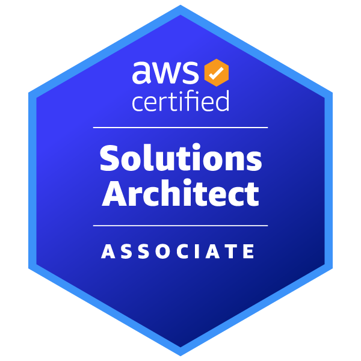

Achievements
Certifications & Awards
Here are some of the recognitions I have received for my contributions and expertise in the field of DevOps.
HashiCorp Certified: Terraform Associate
Successfully completed the HashiCorp Certified Terraform Associate certification. This demonstrates my proficiency in understanding infrastructure as code (IaC) concepts, best practices, and managing resources using Terraform.
View Certification
AWS Certified Solutions Architect – Associate
Validated expertise in designing secure, scalable, and cost-effective solutions on AWS. Proficient in AWS services, architecture best practices, and cloud security.
View Certification

Microsoft Certified: Azure Fundamentals
Earned the Microsoft Certified: Azure Fundamentals certification, demonstrating a foundational understanding of cloud services and Azure concepts, including core solutions, management tools, general security, and network features.
View Certification